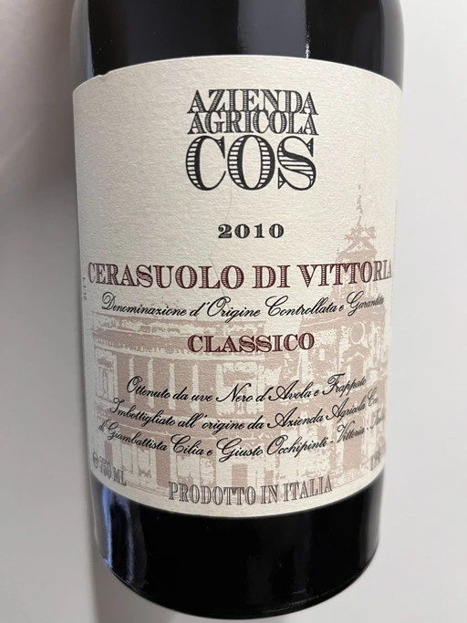
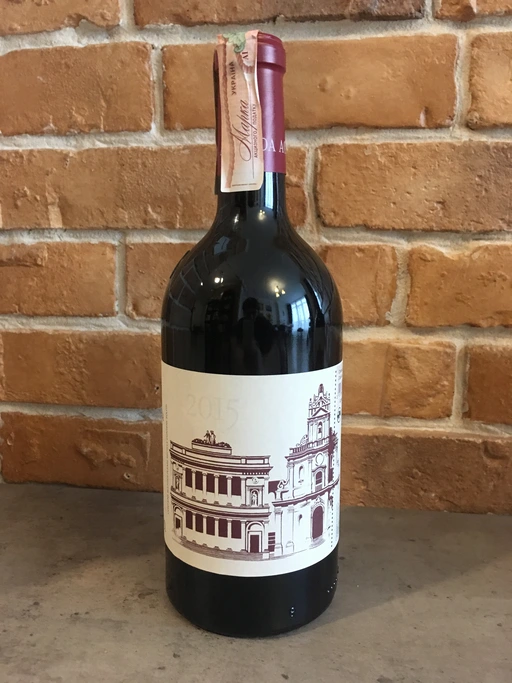

COS Updated on January 18, 2023 Wines  ★ - Cerasuolo di Vittoria Classico - 2010 ★ 8.75 Cerasuolo di Vittoria Classico - 2012  ★ 8.50 Cerasuolo di Vittoria Classico - 2015 ★ 8.50 Cerasuolo di Vittoria Classico - 2016 ★ 7.50 Frappato - 2020 ★ - Pithos Bianco - 2012 ★ 7.75 Ramí - 2019